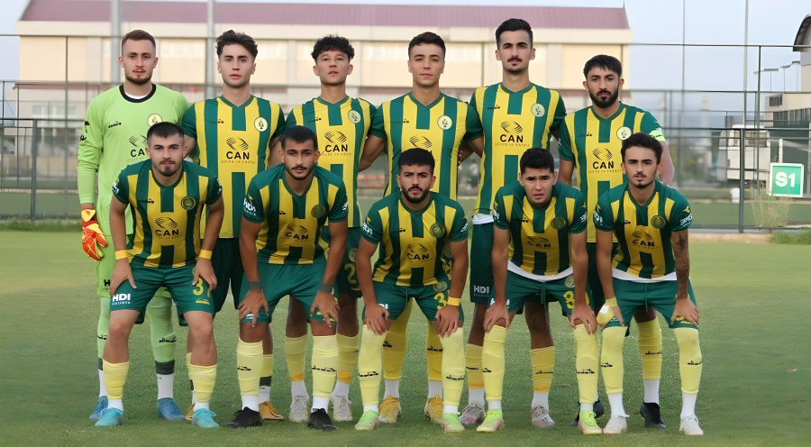

Gençlerin Birliğine Hoşgeldiniz. Darıca Gençler Birliği Spor Kulübü, Türkiye'nin Kocaeli ilinde yer alan bir spor kulübüdür. 1967 yılında kurulan kulüp, futbol başta olmak üzere farklı branşlarda faaliyet göstermektedir. Darıca Gençler Birliği, yerel liglerdeki başarılı performanslarıyla dikkat çekmiş ve zaman zaman üst liglere yükselme mücadelesi vermiştir. Kulüp, aynı zamanda genç sporcuların yetişmesine katkı sağlayarak bölgesel sporun gelişimine önemli bir katkı sunmaktadır.
Genel olarak buradan bilgilere ulaşabilirsiniz. Buradan da Kadroyu inceleyebilirsiniz. 